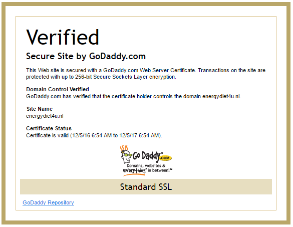

Technicalities
Using SSL in Production¶
(This is a tip of Sebastiaan Janssen at Our Umbraco.)
Our aim is to use SSL in Production and to issue an automatic 301-redirect for any non-secure url within the domain. For example,
mydomain.com => https://mydomain.comwww.mydomain.com => https://www.mydomain.com
In order to achieve this, several things have to be done. This is based on GoDaddy’s hosting, so for SSL one needs to buy their
GoDaddy does not specialize on Windows hosting
Unfortunately, the Windows hosting support of GoDaddy ends up when the place there minimal index.html file in the root directory and can successfully view that page in the browser.
Step 1 – Configure the Production web server¶
Go to Websites & Domains and choose Web Server Settings. Check Require SSL checkbox to prevent non-secure access to the website. Don’t forget to save the changes.
Step 2 – Create the SSL Certificate¶
GoDaddy offers a SHA-2 type SSL-certificate.
You can also place the SSL Certificate security seal on your website that looks like this:
GoDaddy provides the snippet for this. When you click on the seal, you see the confirmation:

Step 3 – Add transformations to the Web.Release.config file¶
1 2 3 4 5 6 7 8 9 10 11 12 13 14 15 16 17 18 | <configuration xmlns:xdt="http://schemas.microsoft.com/XML-Document-Transform"> <appSettings> <add key="debugWebErrors" value="false" xdt:Transform="SetAttributes" xdt:Locator="Match(key)"/> </appSettings> <rewrite xdt:Transform="InsertAfter(/configuration/system.webServer/validation)"> <rules> <rule name="Redirect to https" stopProcessing="true"> <match url="(.*)" /> <conditions> <add input="{HTTPS}" pattern="off" ignoreCase="true" /> </conditions> <action type="Redirect" url="https://{HTTP_HOST}{REQUEST_URI}" redirectType="Permanent" appendQueryString="false" /> </rule> </rules> </rewrite> </configuration> |
URL Rewriting plugin
Note that the above rewrite only works if the URL Rewriting plugin for IIS has been installed on the server.
You’ll also need to update all your templates if they refer to (for example) fonts on a CDN, the easiest way to do that is to not give it the scheme (http or https). So instead of:
1 2 | <link href="http://fonts.googleapis.com/css?family=Open+Sans:400,700" type="text/css" rel="stylesheet"/> |
you can make:
1 2 | <link href="//fonts.googleapis.com/css?family=Open+Sans:400,700" type="text/css" rel="stylesheet"/> |
Notice that http: has been removed. This way it will load over both https and also over http (if you ever decide to revert to http).
robots.txt¶
- install Cultiv DynamicRobots and Robots.txt Editor packages in the Umbraco backend.
- (I am not yet sure if this is a good option) intall the Cultiv SearchEngineSitemap package, which supports multisite solutions out of the box.
- open Developer section in the backend and you will see
Robots.txtoption. Click on it. Now, you can enter the code you need. Here is an example of such file for Umbraco projects:
1 2 3 4 5 6 7 8 9 10 11
# robots.txt for Umbraco User-agent: * Disallow: /bin/ Disallow: /config/ Disallow: /css/ Disallow: /data/ Disallow: /scripts/ Disallow: /umbraco/ Disallow: /umbraco_client/ Disallow: /usercontrols/ Sitemap: http://{HTTP_HOST}/sitemap
The interesting part here is that the {HTTP_HOST} template parameter here is dynamically substituted for the right URL when the project is deployed.
Deployment error
Currently the Cultiv.DynamicRobots.dll file in the bin directory is not being copied by the deployment process and has to be separately copied later.
Alternatively, you could also create robots.txt manually in the project root directory and make sure the link /robots.txt is redirected to /robotstxt in ~\Config\UrlRewriting.config. For details see this article: How to create a robots.txt in Umbraco and edit it from the backoffice